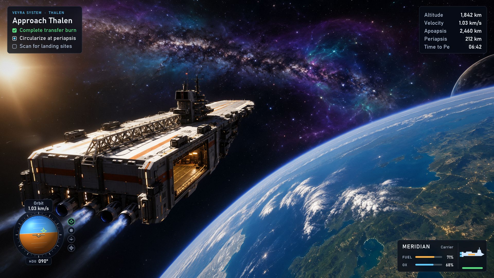
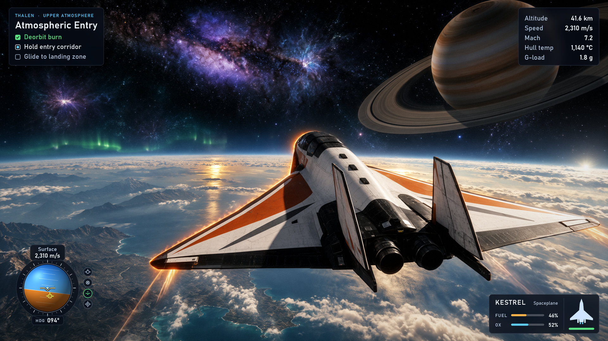
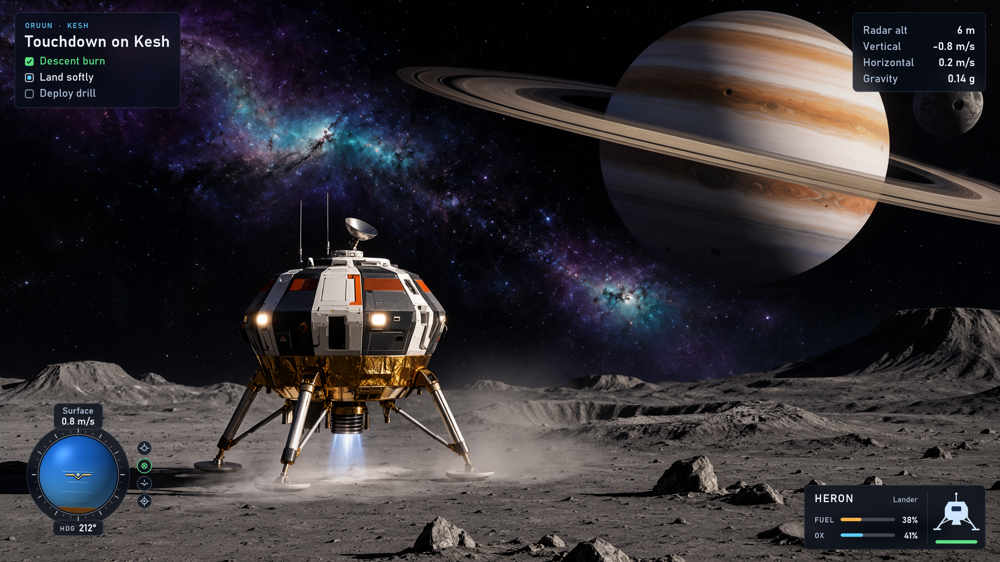
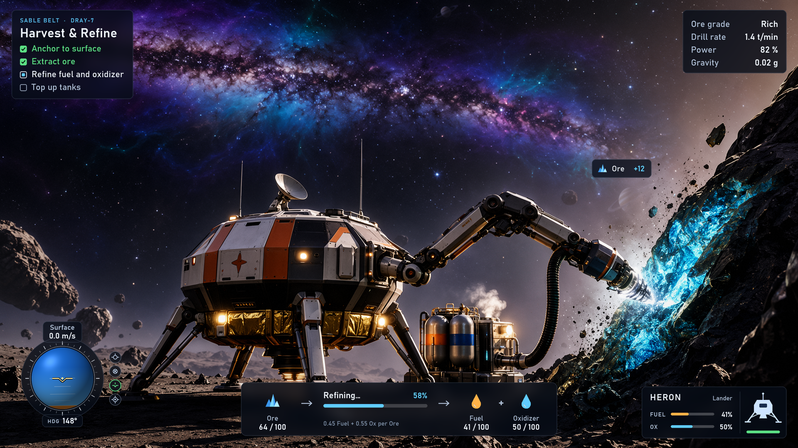
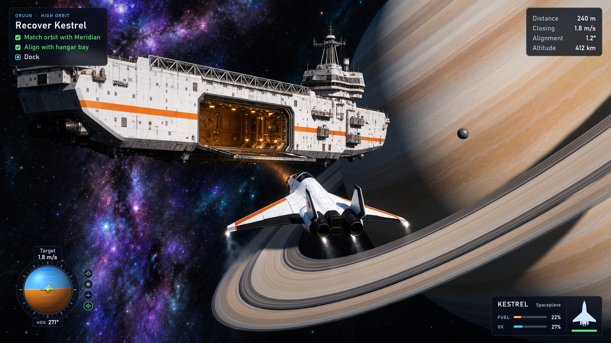

Five 1920×1080 stills. Fleet: carrier Meridian, spaceplane Kestrel, lander Heron. Places: ocean world Thalen, ringed gas giant Oruun and its airless moon Kesh, ore rock Dray-7 in the Sable Belt. Click a shot for full size.




